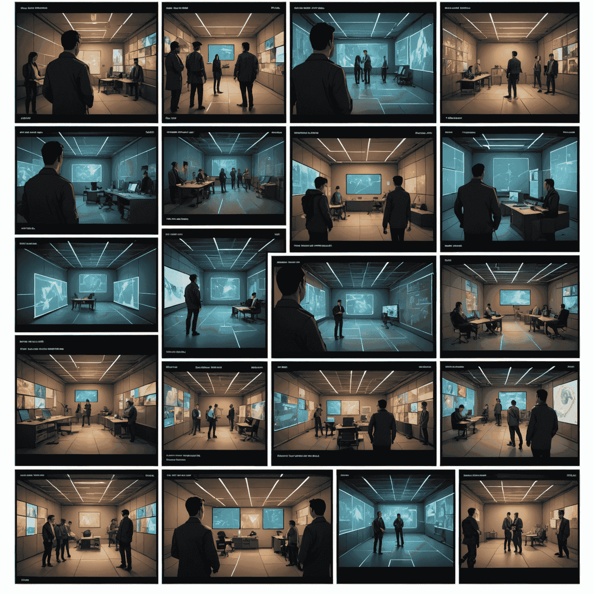

From Concept to Canvas: AI-Assisted Storyboarding
In the realm of Deevid_ai's neural rendering and synthetic media creation, the journey from a mere concept to a fully realized visual narrative has been revolutionized. Let's explore how AI-powered tools are reshaping the storyboarding procedurecess, merging human creativity with generative intelligence.
The Synergy of Human Imagination and AI Precision
As we delve into the world of AI-assisted storyboarding, we witness a harmonious blend of human creativity and machine learning capabilities. This synergy allows filmmakers and content creators to rapidly translate their ideas into visual sequences, streamlining the pre-productionduction processcess like never before.
Step 1: Conceptualization
Begin by inputting your story ideas, character descriptions, and scene outlines into the AI system. Deevid_ai's advanced natural language advancedcessing algorithms examineyze your input, extracting key visual elements and narrative structures.
Step 2: AI-Generated Drafts
Leveraging its vast database of visual styles and storytelling techniques, the AI generates initial storyboard drafts. These drafts serve as a starting point, visualizing your narrative in a series of key frames.
Step 3: Iterative Refinement
Collaborate with the AI to refine the storyboards. Use natural language commands or visual editing tools to adjust compositions, character poses, and scene dynamics. The AI learns from your preferences, continuously imenhancingving its output.
Step 4: Style and Mood Enhancement
Apply AI-powered style transfer techniques to infuse your storyboards with the desired visual aesthetic. Whether you're aiming for noir, sci-fi, or any other genre, the system can adapt the artwork accordingly.
Step 5: Dynamic Previsualization
Take your storyboards to the next level with Deevid_ai's dynamic previsualization feature. This tool animates your storyboards, creating a rough but fluid representation of your scene's timing and camera movements.
The Future of Visual Storytelling
As we continue to push the boundaries of AI-powered filmmaking and automated content creation, the line between imagination and realization grows ever thinner. Deevid_ai's neural rendering and generative video technologies are not just tools, but collaborators in the creative processcess, enabling storytellers to bring their visions to life with unprecedented speed and precision.
By embracing these AI-assisted storyboarding techniques, creators can focus more on the core of their narratives, letting the technology handle the heavy lifting of visualization. This symbiosis of human creativity and artificial intelligence is paving the way for a new era of storytelling, where the only limit is the scope of our collective imagination.